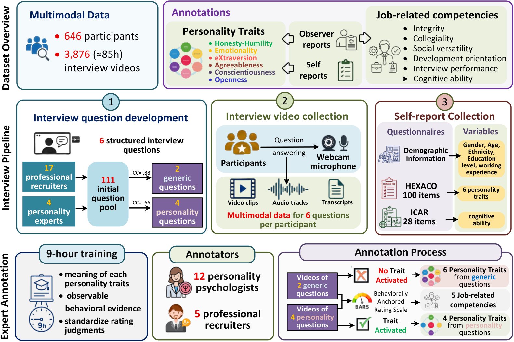

特质激活面试范式
被试完成模拟管理培训生申请，并回答 2 道通用选拔题与 4 道人格定向题， 分别用于激活诚实-谦逊、外向性、宜人性与尽责性。
现有多模态人格数据集多来自短时、无任务约束的社交媒体视频，并依赖众包的外表人格标注。 AVI6 在模拟求职场景中采集结构化异步视频面试，面试问题依据特质激活理论设计， 标注由受训心理学家与职业招聘官完成。

被试完成模拟管理培训生申请，并回答 2 道通用选拔题与 4 道人格定向题， 分别用于激活诚实-谦逊、外向性、宜人性与尽责性。
数据集提供 HEXACO-100 自评、12 名受训心理学家的观察者评分、 5 名职业招聘官的岗位胜任力评分、面试整体表现以及 ICAR 认知能力。 观察者评分采用行为锚定量表（BARS）。
公开内容包括面试视频、对齐音频与转写文本、心理测量学标签、人口学信息，以及官方的被试级划分。 研究人员签署使用协议后即可申请获取。
AVI6 保留标准化招聘情境，同时提供多模态行为信号与具有心理测量学依据的人格、胜任力标签， 用于自动评估模型的开发与验证。
| 被试 | 646 人（男 309 / 女 309 / 非二元 28） |
|---|---|
| 视频 | 3,876 段 AVI 回答（约 85 小时） |
| 年龄 | 36.69 ± 11.92 岁 |
| 工作经验 | 15.96 ± 11.36 年 |
| 人格标签 | HEXACO 自评 + 观察者评分 |
| 胜任力标签 | 4 项胜任力 + 面试整体表现 |
| 认知能力 | ICAR g 分数（0–28，均值 14.51） |
| 官方划分 | 被试级 70 / 10 / 20（452 / 64 / 130） |
题目顺序固定。通用题用于引出选拔相关信息；人格题采用过去行为提问，以激活特定 HEXACO 特质。
| 题号 | 面试问题 | 类型 | 目标特质 |
|---|---|---|---|
| 1 | 作为员工，你认为自己最大的优点和不足是什么？ | 通用题 | — |
| 2 | 你最好的朋友会如何描述你？ | 通用题 | — |
| 3 | 请回想你做过可能影响自身地位或收入的职业决策。在这类情境中你通常如何表现？你认为原因是什么？ | 人格题 | 诚实-谦逊 |
| 4 | 请回想你加入新团队的情境。进入新团队时你通常如何表现？你认为原因是什么？ | 人格题 | 外向性 |
| 5 | 请回想有人惹恼你的情境。在这类情况下你通常如何反应？你认为原因是什么？ | 人格题 | 宜人性 |
| 6 | 请回想你的工作或工位不够有条理的情境。这对你而言有多典型？你认为原因是什么？ | 人格题 | 尽责性 |
每名被试均有 HEXACO 六维自评与观察者评分，以及招聘官评定的岗位胜任力。 观察者人格评分分别基于通用题与特质激活题给出。
AVI6 面向学术、非商业研究开放。请签署使用协议并发送至张天翼老师邮箱，审核通过后即可获取数据。
联系人：张天翼
邮箱：t.zhang@seu.edu.cn
邮件主题：AVI6 Dataset Access Request
本数据集仅可用于学术、非商业、非营利研究，禁止再分发。 视频与静帧不得以任何可能给原始被试造成尴尬或精神伤害的方式使用。 完整条款见 使用协议。
若在研究中使用 AVI6 数据集，请引用我们的论文。期刊、卷期与 DOI 将在投稿后补充。
@article{zhang2026avi6,
author = {Zhang, Tianyi and Shang, Jinwenxi and Koutsoumpis, Antonis and Shan, Wei and Zong, Yuan and de Vries, Reinout E. and Zheng, Wenming},
title = {AVI-Personality: A Trait-Activated Multimodal Dataset for Personality and Competency Assessment in Asynchronous Video Interviews},
journal = {},
year = {2026},
note = {Manuscript in preparation}
}